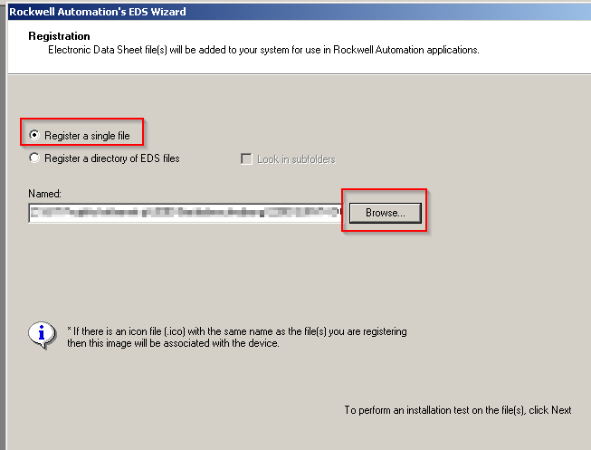
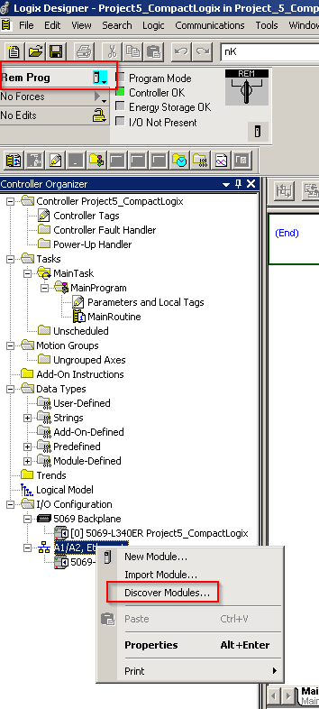
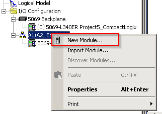
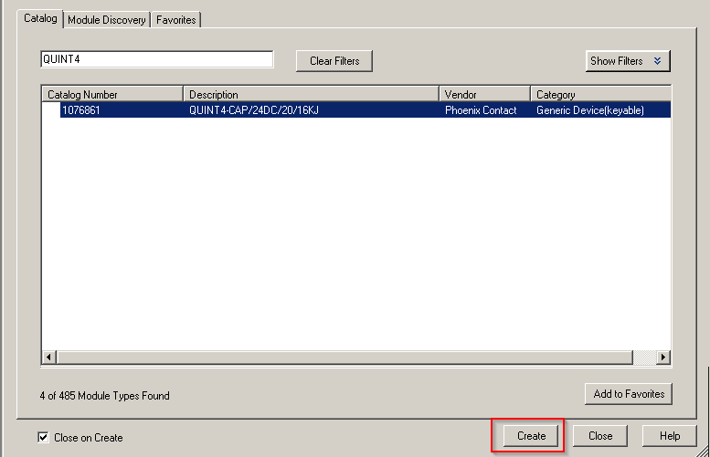
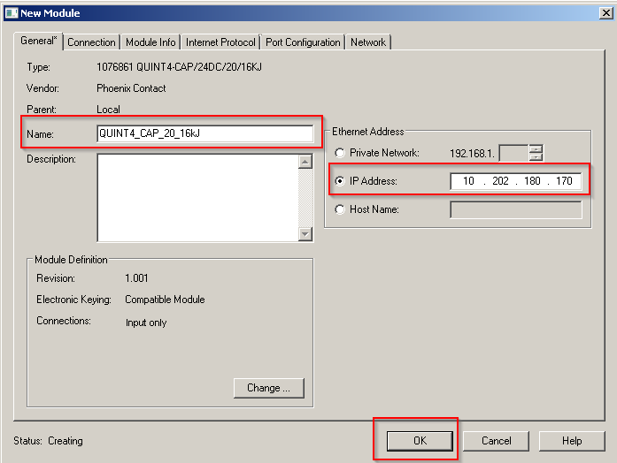
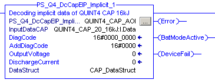
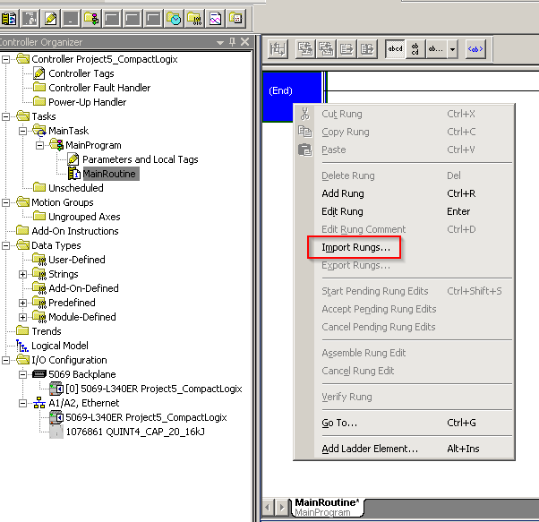
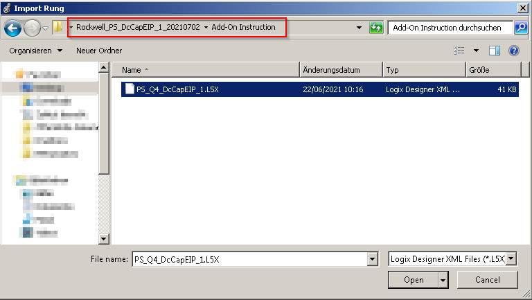
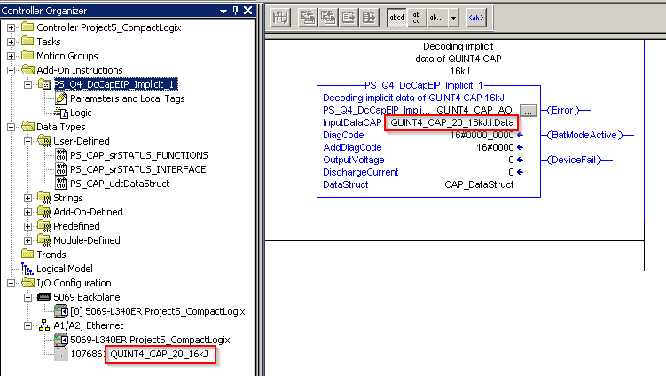

Rockwell Automation Studio 5000
Import EDS File
Import the EDS Files with “EDS Hardware Installation Tool”.
|

|
Navigate through the Installation Wizard and Register an EDS File(s).
|

|
Select “Register a single file” and browse to the folder which contains the EDS File.
Follow the next steps for installing the files.
|


|
Hardware Configuration
There are two ways to configure the hardware. First way is to discover the modules. For this connect to the CAP module
and right click on the Ethernet Connection of the PLC. Choose “Discover Modules” and scan the network for the CAP module.
|


|
Select the previously set IP address and check if the shown Ordernumber matches to the CAP. Click on “Create”
and add the CAP to the Hardware configuration.
|
<picture>
|
Name the CAP “QUINT4_CAP_20_16kJ”, enter the previously set address of the CAP.
|

|
Second way to configure the hardware is to add the CAP with the module catalog. Right click on Ethernet
Connection and select “New Module”.
|


|
Search for the correct QUINT4 CAP 16kJ and click on “Create”.
|


|
Name the CAP “QUINT4_CAP_20_16kJ” and configure the previously set IP address.
|


|
Software Configuration
AddOn Instruction PS_Q4_DcCapEIP_Implicit
This AddOn Instruction decodes cyclically transmitted data of the UPS and provides them to the user in a readable form.
|


|
Outputs
Name |
Type |
Description |
|---|---|---|
Active |
BOOL |
TRUE: AOI is active |
Error |
BOOL |
TRUE: An error has occurred. For details refer to DiagCode and AddDiagCode. |
DiagCode |
DINT |
Diagnostic Code. Refer to Diagnostic table |
AddDiagCode |
INT |
Additional Information on Diagnostic Code. Refer to Diagnostic table |
BatModeActive |
BOOL |
TRUE: Mains Failure, CAP is in Buffer Mode. |
Device Fail |
BOOL |
TRUE: An error has occured |
OutputVoltage |
INT |
Output voltage of CAP in mV |
DischargeCurrent |
INT |
Discharge current of CAP in mA |
InOuts
Name |
Type |
Description |
|---|---|---|
InputDataCAP |
SINT[22] |
Process data from CAP. SINT array with the limits 0 to 21 |
DataStruct |
PS_CAP_udtDataStruct |
Structure of CAP specific data. Refer to Appendix |
Diagnostic
Diagcode |
AddDiagCode |
Description |
|---|---|---|
16#0000 |
16#0000_0000 |
The addon instruction is not active. |
16#8000 |
16#0000_0000 |
The addon instruction is active, no errors detected. |
Startup instructions
Open the “MainRoutine” or a Subroutine. Right click on the routine and select “Import Rungs”.
|


|
Navigate to the downloaded AddOn Instruction and import the “.L5X file.
|


|
After successfully imported the rung the AOI should appear like shown below. The preconfigured “InputDataCAP” is
set to the Name “QUINT4_CAP_20_16kJ”. It should match to the Name of the CAP which was set in the Hardware configuration.
|


|
Compile the project and download it on the PLC. After running the system the current values of the CAP
are shown in the output structure “CAP_DataStruct”.
|
<picture>
|
Appendix
DATA TYPES
PS_CAP_srSTATUS_FUNCTIONS
Tag |
Type |
Description |
|---|---|---|
xStartUpActive |
BOOL |
Device is starting |
xMainPowerModeActive |
BOOL |
Device is in mains mode |
xBatteryModeActive |
BOOL |
Device is in buffer mode |
xOutput |
BOOL |
Output of device is on/off |
xChargerOn |
BOOL |
Charger of device is on/off |
xRemoteConnected |
BOOL |
Remote DI connected/disconnected |
xBatDelay1Active |
BOOL |
Battery mode delay time 1 is active |
xBatDelay2Active |
BOOL |
Battery mode delay time 2 is active |
xBatDelay3Active |
BOOL |
Battery mode delay time 3 is active |
xBufferReady |
BOOL |
Connected energy storage is ready to buffer |
xBatteryPresent |
BOOL |
Energy storage connected/disconnected |
xTriggerLogData |
BOOL |
New log data available |
xInputVoltageOK |
BOOL |
Input voltage in valid range |
xParallelModeActive |
BOOL |
Device works in parallel mode |
PS_CAP_srSTATUS_INTERFACE
Tag |
Type |
Description |
|---|---|---|
xDO_Alarm |
BOOL |
DO1 is active/inactive |
xDO_UinOK |
BOOL |
DO2 is active/inactive |
xDO_Ready |
BOOL |
DO3 is active/inactive |
xDI_Remote |
BOOL |
DI1 is active/inactive |
xLED_Ready |
BOOL |
LED Ready is on/off |
xLED_UinOK |
BOOL |
LED UinOK is on/off |
xLED_Alarm |
BOOL |
LED Alarm is on/off |
PS_CAP_udtDataStruct
Tag |
Type |
Description |
|---|---|---|
srSTATUS_FUNCTIONS |
PS_CAP_srSTATUS_FUNCTIONS |
DO1 is active/inactive |
srSTATUS_INTERFACE |
PS_CAP_srSTATUS_INTERFACE |
DO2 is active/inactive |
InputVoltage |
INT |
CAP input voltage in mV |
OutputVoltage |
INT |
CAP output voltage in mV |
DischargeCurrent |
DINT |
CAP discharge current in mA |
BufferVoltage |
INT |
Buffer voltage in mV |
SOC |
INT |
State of charge in % |